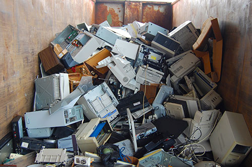
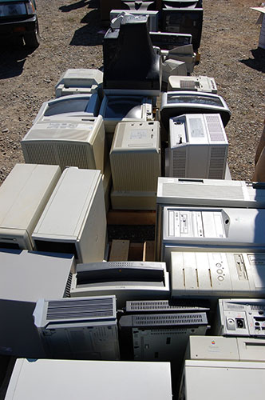
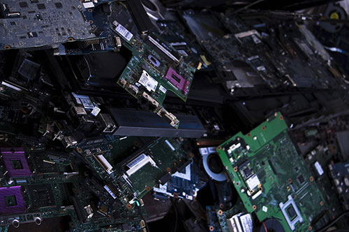

Why is E-Waste a problem?
E-waste ranges from large household appliances, like refrigerators and freezers, to small household appliances, like toys and remote controls. In 2006, the United Nations estimated the amount of worldwide electronic waste discarded each year to be about 50 million metric tons and that this could rise by as much as 500% over the next decade.
Globally, e-waste makes up about 5% of all solid waste Storage:
Most e-waste trash ends up in landfill, where it stays, as e-waste is not biodegradable. This means that huge amounts of land is needed to contain and store all the unrecycled e-waste.

Health and the Environment:
E-waste also causes serious environmental problems because of many toxic chemicals used in electronic devices. These toxic chemicals, like mercury, arsenic, barium and lead, pollute the air, water and soil which harms our health, and that of animals, and damages ecosystems.

Data Security:
If computer hard drives are not wiped clean or destroyed at the time of disposal then some sensitive data can be recovered from these hard drives found in e-waste.
